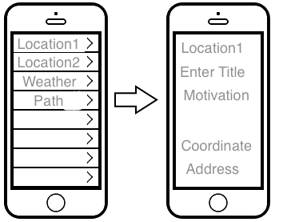

iOS App
When the program launches, it will first complete all necessary initializations. If this is the first launch of the program, it will then display a settings menu, where the user must enter the location of their home and of their work, and expected arrival and departure windows. The program will then enter the default view, MasterView. Masterview contains a list of features of the route which are selectable, a button to redisplay the settings menu, and a button to send all stored route data. If any features of the route are selected, the screen will display DetailView, which contains all the information contained in that feature. In the DetailView, the user is able to edit attributes of the features.
When the program is put into the background, it waits until it receives an event message indicating that the user is expected to be leaving for their destination soon, and will start the GPS is the significant-change service mode. It will then record all GPS event messages in a feature until the time-out limit is reached or the GPS event contains the location of the destination. When time-out or destination is reached, the GPS is shut down. If the destination was reached, the NOAA web api is queried for current local weather data for the area spanned by the route. If there are any features which can not be identified, the user is asked to identify them. And the route is then stored internally in the phone until the route sending button is pressed. The phone then reenters the state of waiting for an event message indicating the user is expected to be leaving for their destination soon.

This chart presents the algorithmic function of the client application. In reality, it is an event-driven program. However, the algorithm is more easily visualized as being procedural.
When the route sending button is pressed, the program verifies that the data is complete and no additional user feature identification is needed. It then queries the public research HTTP server for the researcher’s PGP public key. The program will then encrypt the route data via PGP, with that key, and email the encrypted data to the server hosting the processing script. It then continuously queries the public research HTTP server for a list cryptographically hashed unique identifiers that indicate participation, it attempts to decrypt each list element using its private key, checking if the route data has been received and processed. Upon locating the confirmation of receipt, the raw route data is wiped from the phone.

Image taken from Introduction to Cryptography in the PGP 6.5.1 documentation. Copyright © 1990-1999 Network Associates, Inc. and its Affiliated Companies.